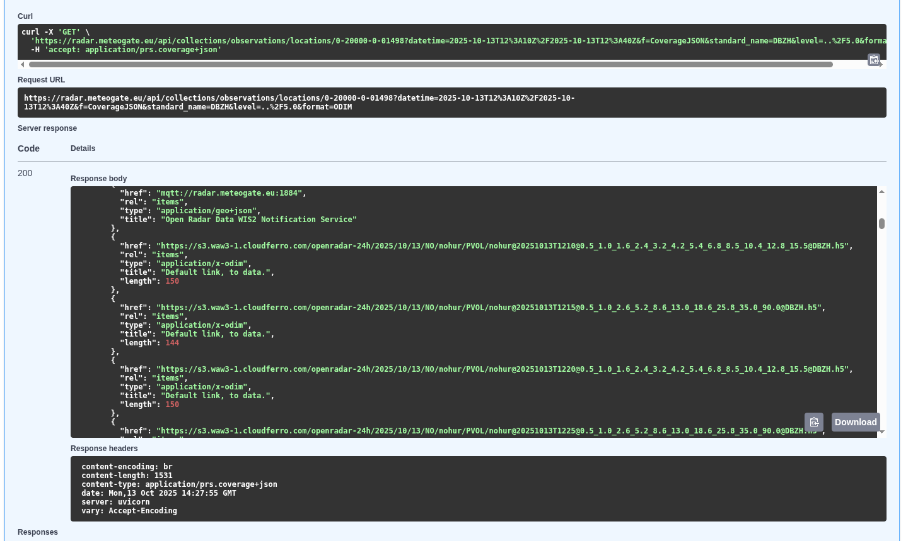
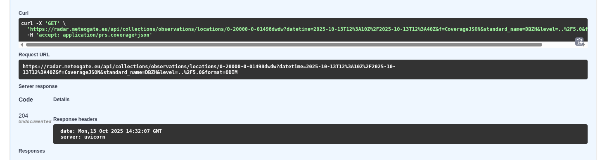

2. DISCOVERING AND ACCESSING DATA
Data Retrieval with Open Radar Data (ORD) API
Please note: ORD API onboarding on MeteoGate is delayed, to access radar data and products whitelisting is recommended.
Currently, access to data and products via the ORD API can be arranged by whitelisting users’ IP addresses or IP address ranges. Requests should be sent to support.opera[at]eumetnet.eu, and access will be enabled accordingly.
This procedure was originally established for the pre-operational phase and remains in place due to a delay in onboarding the ORD API to MeteoGate. Please note that the data and product provision itself is fully operational; only the access process has not yet been fully implemented through MeteoGate. In the meantime, users are kindly requested to provide their IP address details for whitelisting in order to access the data. We sincerely apologise for any inconvenience this temporary arrangement may cause and appreciate your understanding. We are actively working on a solution and expect to make the ORD API available via MeteoGate in the coming weeks.
Once onboarding has been completed, access will be provided through MeteoGate, which serves as a one-stop shop for meteorological and hydrological products and data. Further information is available on the MeteoGate website: MeteoGate).
Data available in ORD API
1. EUMETNET OPERA single-site radar data
- 24-hour rolling cache, with a long-term archive (2012–, TBD)
- Formats: BUFR (older) and ODIM HDF5 (recent)
- License: CC BY 4.0 (with exceptions noted in metadata)
- Currently mainly includes:
- DBZH (Doppler-filtered horizontal reflectivity factor, with national QC applied)
- TH (unfiltered horizontal reflectivity factor)
- VRADH (horizontal radial velocity)
- Basic dual-pol variables (e.g. correlation coefficient, differential reflectivity, differential phase shift, specific differential phase) are planned to be added from 2027 onwards (TBD)
2. European OPERA composite products
- Products: maximum reflectivity, instantaneous rain rate, 1-hour accumulation
- 24-hour rolling cache, with a long-term archive (2012– )
- Formats: ODIM HDF5 and cloud-optimized GeoTIFF (TBD)
- License: CC BY 4.0
3. National radar products
- Examples of national composites, rain rate composites, accumulations, echo tops
- Access: via links to national interfaces (24h access of links)
- Formats: ODIM HDF5 or cloud-optimized GeoTIFF
ORD API Examples
The Open Radar Data API is ideal for retrieving and integrating radar data into various workflows. Here are some examples:
1. EUMETNET OPERA single-site volume radar data:
-
Retrieve single site (Hurum, Norway) radar intensity data (DBZH) in ODIM format for specific time range (2025-10-13T12:10Z/2025-10-13T12:40Z) and elevations lower than 5°:
i. Open ORD API Swagger UI and select: collections/observations/localtions/{location_id}
ii. Click to "Try it out" button and set the query parameters:
iii.
location_id: 0-20000-0-01498iv.
parameter-name: leave blank, set it below separately(standard_name:level::)v.
datetime: 2025-10-13T12:10Z/2025-10-13T12:40Zvi.
standard_name: DBZHvii.
level: ../5.0viii.
format: ODIMix.
method: scanx.
durationis blankxi. Click the Execution button and the response available. See the
curlexample the request url and the response belowxii. Direct meteogate query link:
https://api.meteogate.eu/ord/edr/collections/observations/locations/0-20000-0-01498?datetime=2025-10-13T12%3A10Z%2F2025-10-13T12%3A40Z&f=CoverageJSON&level=..%2F5.0&format=ODIMNote: Update the datetime field within this URL.xiii. ODIM data are downloadable from these links:

xiv. Using aws tool
Check the file existing in the S3 bucket: ```bash aws s3 ls s3://openradar-24h/2025/10/13/NO/nohur/PVOL/ --endpoint-url https://s3.waw3-1.cloudferro.com/ --no-sign-request ``` Check the daily OPERA data in the S3 bucket: ```bash aws s3 ls s3://openradar-24h/2025/10/16/OPERA/COMP/ --endpoint-url https://s3.waw3-1.cloudferro.com/ --no-sign-request ``` Copy file to new_local_filename.h5: ```bash aws s3 cp s3://openradar-24h/2025/10/16/OPERA/COMP/OPERA@20251016T0220@0@DBZH.h5 ./new_local_filename.h5 --endpoint-url https://s3.waw3-1.cloudferro.com/ --no-sign-request ```xv. radar_meta(ODIM attributes) section is below the links:
```json "metocean:wigosId": "0-20000-0-01498", "metocean:platform_name": "[nohur]", "metocean:format": "ODIM", "metocean:radar_meta": { "object": "PVOL", "elangle": 1, "nbins": 960, "rstart": 0, "rscale": 250, "nrays": 360, "a1gate": 338, "product": "SCAN", "beamwH": 0.95 } ```xvi. If no data for the specified query the response is 204.

-
Query Radial velocity volumes:
i.
standard_name: VRADH -
Retrieve all Dutch data.
i.
location_id: 0-20010-*-nl*
2. OPERA composite products:
-
Fetch composite product from OPERA production
i.
standard_name: RATE or ACRR or DBZH -
OPERA products:
i.
location_id: 0-*-*-OPERA -
Query ODIM format:
i.
format: ODIM -
Composite:
i.
method: comp
3. Select observation items:
-
Retrieve German sites from boundary box area (-5.5,18.0,72.0,82.1) where raw radar reflectivity data (TH) is available in ODIM format for specific time range (2025-10-13T12:10Z/2025-10-13T12:40Z):
i. Open ORD API and select: collections/observations/items
ii. Click to "Try it out" button and set the query parameters:
iii.
bbox: -5.5,18.0,72.0,82.1iv.
datetime: 2025-10-13T12:10Z/2025-10-13T12:40Zv.
id: leave blankvi.
parameter-name: leave blank, set it below separately (standard_name:level::)vii.
naming_authority: de.dwdviii.
institution,platform: leave blankix.
standard_name: THx.
unit,instrument,level: leave blankxi.
format: ODIM,xii.
method: scanxiii.
period,f: leave blankResult ```json { "type": "FeatureCollection", "features": [ { "type": "Feature", "geometry": { "type": "scan", "coordinates": [ 9.694533, 52.460083 ] }, "properties": { "summary": "Radar data from OPERA network.", "license": "https://creativecommons.org/licenses/by/4.0/", "naming_authority": "de.dwd", "platform": "0-20000-0-10339", "platform_name": "[dehnr]", "standard_name": "TH", "unit": "%", "level": 0.5, "period": "PT30S", "parameter_name": "TH:0.5:point:PT30S", "timeseries_id": "07ea52bf21af5399cbc165982559d2ea", "radar_meta": { "object": "SCAN", "elangle": 0.4998779296875, "nbins": 720, "rstart": 0, "rscale": 250, "nrays": 360, "a1gate": 100, "product": "SCAN", "frequency": 5641692508.103789, "beamwH": 0.9, "beamwV": 0.9 }, "format": "ODIM", "platform_vocabulary": "https://oscar.wmo.int/surface/rest/api/search/station?wigosId=0-20000-0-10339", "method": "scan", "data": "https://radar.meteogate.eu/api/collectionscollections/observations/locations/0-20000-0-10339?=parameter-name=TH:0.5:point:PT30S" }, "id": "07ea52bf21af5399cbc165982559d2ea" }, { "type": "Feature", "geometry": { "type": "Point", "coordinates": [ 6.967111, 51.405649 ] }, "properties": { "summary": "Radar data from OPERA network.", "license": "https://creativecommons.org/licenses/by/4.0/", "naming_authority": "de.dwd", "platform": "0-20000-0-10410", "platform_name": "[deess]", "standard_name": "TH", "unit": "%", "level": 0.5, "period": "PT30S", "parameter_name": "TH:0.5:point:PT30S", "timeseries_id": "126aad398d3e52c3151a5cc5f7a0ffb2", "radar_meta": { "object": "SCAN", "elangle": 0.4998779296875, "nbins": 720, "rstart": 0, "rscale": 250, "nrays": 360, "a1gate": 100, "product": "SCAN", "frequency": 5606682004.950664, "beamwH": 0.9, "beamwV": 0.9 }, "format": "ODIM", "platform_vocabulary": "https://oscar.wmo.int/surface/rest/api/search/station?wigosId=0-20000-0-10410", "method": "point", "data": "https://radar.meteogate.eu/api/collectionscollections/observations/locations/0-20000-0-10410?=parameter-name=TH:0.5:point:PT30S" }, "id": "126aad398d3e52c3151a5cc5f7a0ffb2" },... ]... } ```